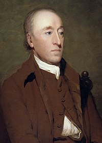

30/05 : Dia do Geólogo!
O que faz um geólogo?
O geólogo é o profissional que analisa e estuda a composição terrestre. Em outras palavras, o especialista da área realiza exames relacionados, majoritariamente, à camada litosférica da terra, compreendendo os diferentes tipos de solo, rochas, minerais e características intrínsecas à superfície. Por meio da análise do profissional, outros setores podem ser favorecidos, como da mineração, petróleo, hidrografia e, até mesmo, da engenharia.
Para mais informações sobre o que faz um geólogo, acesse o link.
Clique aquiGeólogos mais famosos do mundo.

James Hutton
Químico, naturalista e geólogo britânico, considerado mesmo um dos fundadores da geologia, nasceu a 3 de junho de 1726, em Edimburgo, e faleceu a 26 de março de 1797, no mesmo local. Concluiu os estudos secundários naquela cidade escocesa, tendo, de seguida, ingressado na Universidade de Edimburgo para estudar Direito - a despeito da área do seu maior interesse ser a Química. Desistiu da carreira jurídica e acabou por licenciar-se em Medicina, em 1749.Criador e defensor da Escola Plutonista, defendeu na sua obra, editada em dois volumes, Teoria da Terra (1795) que o magma era o formador das rochas, embora admitisse a intervenção da água na sua formação. Estudou as discordâncias angulares e reportou-lhes interesse geológico. Admitia a impossibilidade de serem encontrados vestígios de rochas correspondentes ao início da história da Terra, atendendo a que as rochas mais antigas teriam derivado de outras ainda mais antigas que, entretanto, tinham sido destruídas por erosão. Reconheceu a ação dos processos naturais na modelação da superfície terrestre tais como a erosão, a deposição e a atividade vulcânica. Para o revolucionário Hutton, a composição das rochas do planeta eram uma prova de que a Terra existiria há muito mais tempo do que o relatado na Bíblia.

Charles Lyell
Geólogo britânico, oriundo da Escócia, nascido em 1797 e falecido em 1897. Os seus trabalhos tiveram repercussão na Geologia aquando da publicação do livro Principles of Geology em 1830-1833. Nele mostra os inconvenientes das doutrinas criacionistas e ataca a teoria do catastrofismo de Cuvier, ao mesmo tempo que propõe o "Princípio das causas atuais ou atualismo". Segundo este princípio os fenómenos ao longo dos tempos geológicos são os mesmos que os atuais, diferindo apenas na intensidade e duração.Lyell criou o termo «metamorfismo» e foi o primeiro a sugerir a origem metamórfica dos granitos.A aparente estabilidade da sequência de processos que moldam a Terra também levou Lyell a defender que o mesmo se aplicaria aos seres que habitam o planeta; era essa a sua ideia de evolução das espécies. No entanto, o britânico não abraçou a noção de seleção natural, que marcou a teoria de seu contemporâneo e amigo Charles Darwin.
Alfred Wegener
Alfred Lothar Wegener (1 de novembro de 1880 - novembro de 1930) foi um climatologista, geólogo, geofísico, meteorologista e pesquisador polarDurante sua vida, Alfred Wegener (1880-1930) foi conhecido principalmente por suas conquistas em meteorologia e como pioneiro da pesquisa polar. Hoje, ele é mais lembrado como o criador da hipótese da deriva continental, que ele propôs pela primeira vez em 1912. A teoria proposta sugeria que os continentes estão em um lento movimento ao redor da Terra, o que ficou conhecido como “Deriva Continental”. Foi controversa e amplamente rejeitada pela geologia convencional até os anos 50, quando numerosas descobertas - como o paleomagnetismo - proporcionaram um forte apoio à deriva continental e, portanto, uma base substancial para o modelo atual de placas tectônicas.